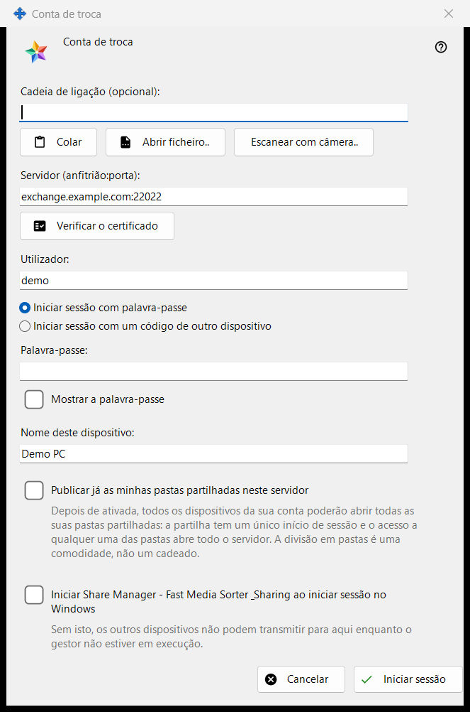
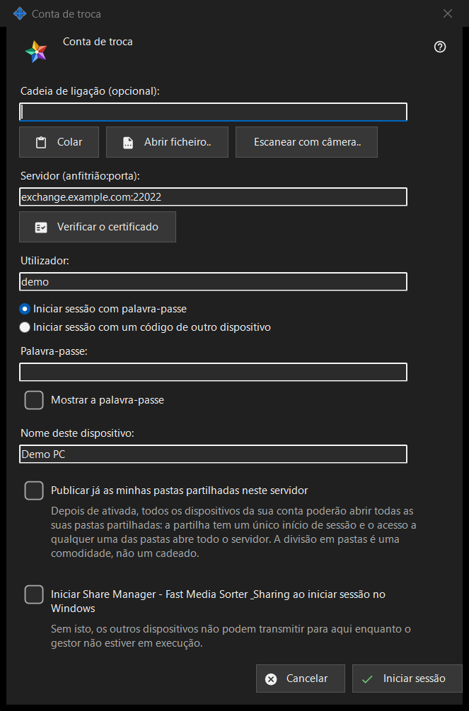

Conta de troca
Finalidade
Inicia sessão deste PC como dispositivo de uma conta num Media Exchange Server. A janela abre-se a partir do botão «Iniciar sessão..» da página Conta de troca das definições do Share Manager e a partir de «Publicar através de um servidor de troca..», que a abre com a opção de publicação já marcada.


Nesta ordem
- Se quiser, cole, abra ou escaneie uma cadeia de ligação; ela preenche o servidor e o utilizador.
- Clique em «Verificar o certificado» e, a menos que o sistema confie nele ou a cadeia o trouxesse, compare a impressão digital com a do operador e clique em «Confiar neste certificado».
- Introduza o utilizador e a palavra-passe ou o código de emparelhamento.
- Defina o nome do dispositivo e as opções.
- Clique em «Iniciar sessão».
Os elementos
Cadeia de ligação
«Cadeia de ligação (opcional):» aceita uma cadeia que cola com «Colar», carrega de um ficheiro .fmsexch ou de uma imagem QR com «Abrir ficheiro..» ou lê com «Escanear com câmera..». Só preenche o servidor e o utilizador; nada se liga até clicar em «Iniciar sessão». Uma cadeia com impressão digital fixa esse certificado, pelo que não há nada para comparar à mão. Uma cadeia com convite muda a janela para o registo. Uma cadeia inutilizável recebe uma recusa de uma linha.
Servidor e certificado
«Verificar o certificado» liga-se a «Servidor (anfitrião:porta):» e mostra «Impressão digital do certificado do servidor:». Se o sistema confia no certificado, não é preciso fixar nada. Caso contrário, compare a impressão digital com a que o operador do servidor lhe deu e clique em «Confiar neste certificado»; só esse botão aceita um certificado que o sistema não conhece. Alterar o texto do servidor faz esquecer a verificação. Enter não faz nada enquanto nenhum certificado for de confiança, para que nenhuma palavra-passe vá para um servidor que ninguém garantiu.
Utilizador, palavra-passe e código de emparelhamento
Introduza «Utilizador:» e escolha «Iniciar sessão com palavra-passe» («Palavra-passe:», com «Mostrar a palavra-passe») ou «Iniciar sessão com um código de outro dispositivo» («Código de emparelhamento:», emitido por outro dispositivo da mesma conta). O campo é limpo no instante em que o seu valor é enviado, seja qual for o resultado; o dispositivo guarda apenas um token, nunca a palavra-passe.
Registo por convite
Quando a cadeia traz um convite, as duas opções de início de sessão dão lugar ao registo: «A palavra-passe da conta:» e «Palavra-passe mais uma vez:» definem a nova palavra-passe, que tem de cumprir a regra apresentada (pelo menos 10 caracteres com uma letra latina maiúscula, uma minúscula e um algarismo), e o botão passa a dizer «Criar a conta».
Nome do dispositivo e opções
«Nome deste dispositivo:» (até 64 caracteres) começa com o nome do computador. «Publicar já as minhas pastas partilhadas neste servidor» está desativada, a menos que tenha chegado por «Publicar através de um servidor de troca..»; depois de ativada, todos os dispositivos da sua conta podem abrir todas as suas pastas partilhadas, porque a partilha tem um só utilizador. A última opção inicia o Share Manager quando inicia sessão no Windows (desativada por predefinição), para que outros dispositivos possam transmitir para este PC.
Um servidor de cada vez
Um dispositivo pertence a um só servidor. Iniciar sessão noutro pergunta se deve deixar o atual, e a publicação no servidor antigo termina. Após um contacto falhado, o botão «Por que não conecta?..» abre o teste de ligação.
Definições do gestor · Definições de partilha SFTP · Definições do servidor de troca